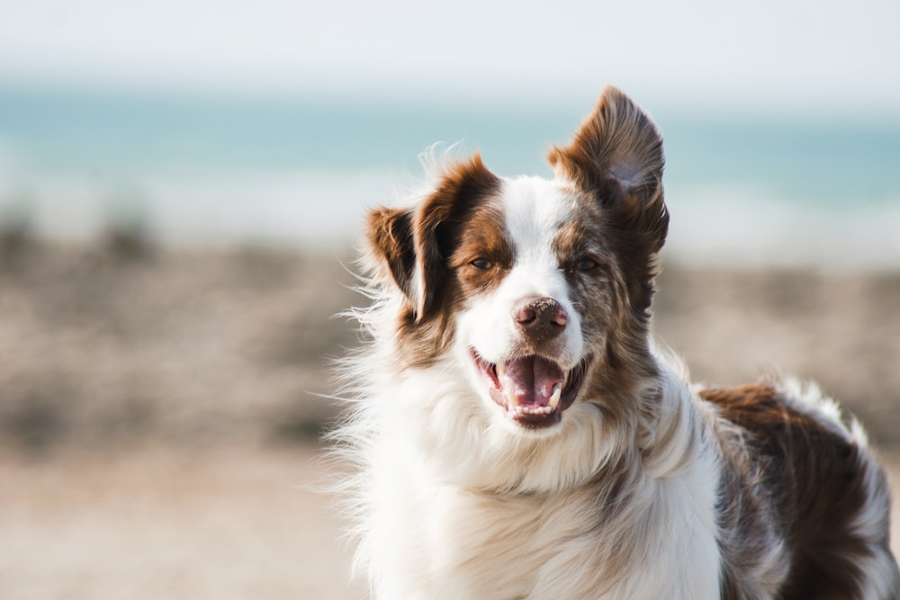
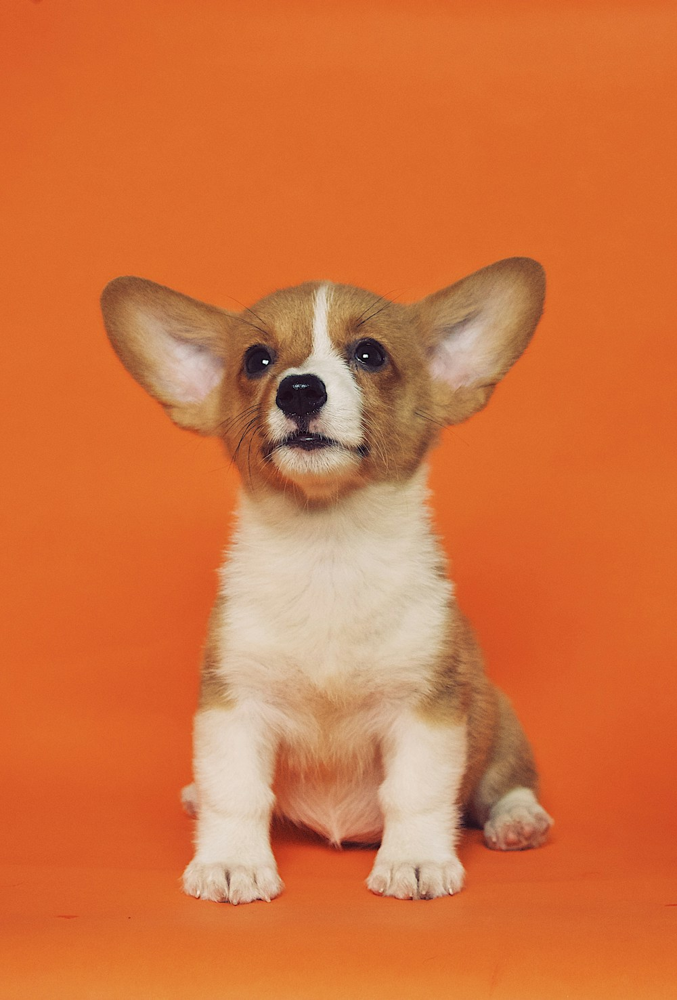
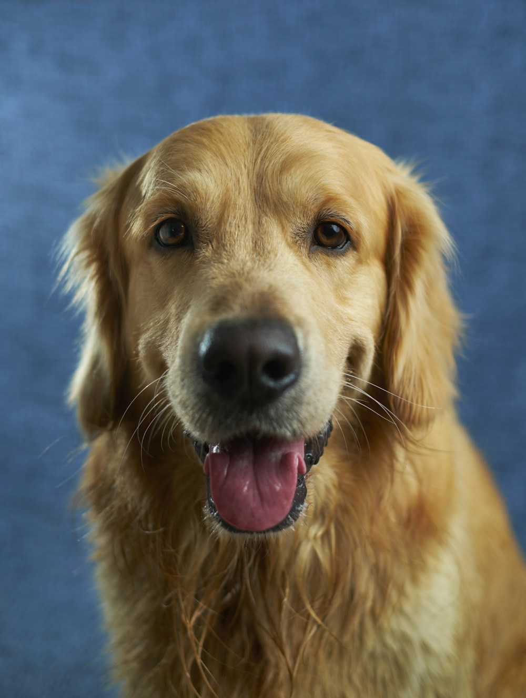

Mochi
2 歲 · 小型犬 · 和 Elena
距離 1.2 km · 目前在線
為什麼推薦
活動力接近，都偏好先觀察再互動；適合從文字聊天開始。
活動力接近，都偏好先觀察再互動；適合從文字聊天開始。
大安區 · 找到聊得來的狗友

2 歲 · 小型犬 · 和 Elena
距離 1.2 km · 目前在線

3 歲 · 中型犬 · 和 Kai
距離 2.0 km · 週末常在線
大安森林公園東側出現疑似有害植物。已由 3 位飼主回報，最後確認 2 小時前。
和附近的狗家長交換可靠資訊
1,284 位狗家長 · 今日 36 則新討論
先分享經驗，再決定要不要見面。

想請教慢熟狗狗第一次加入線上社群時，大家會先從哪些互動開始？我們最近對「只看不回」比較舒服。
東側步道的植物回報已由管理者確認，這裡整理了照片、位置與最後觀察時間，方便大家自行判斷。
只和彼此同意的狗友交流
你可以先看對方的互動偏好，再決定是否開啟聊天；沒有同意，就不會收到陌生訊息。
讓狗友更容易理解 Nori
5 kg · 小型犬 · Elena 管理
檔案完成 72%補充「玩耍方式」與「舒適界線」，推薦會更精準。
和 Elena · 距離 1.2 km · 目前在線
你們都偏好先觀察、再慢慢互動。這代表可以先從文字交流開始，不需要立刻安排見面。
適配建議來自雙方公開標籤，不能取代飼主觀察與安全判斷。
和 Kai · 距離 2.0 km · 週末常在線
Pudding 喜歡溫和互動與並行散步，對突然靠近需要一點時間。你可以先在線上交換日常訊息。
Kai：我們也喜歡先從並行散步開始，不急著讓狗狗直接互動。你家 Nori 平常喜歡哪些安靜活動？
對方接受後才能開始聊天。你可以先瀏覽社群或補充自己的互動偏好，不需要急著安排線下見面。